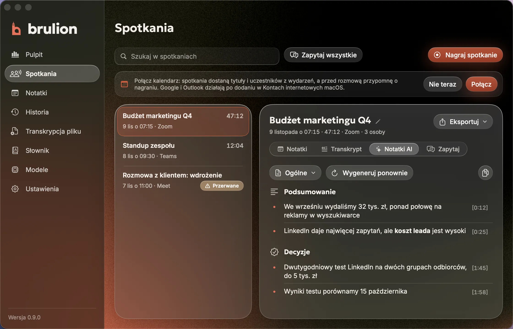
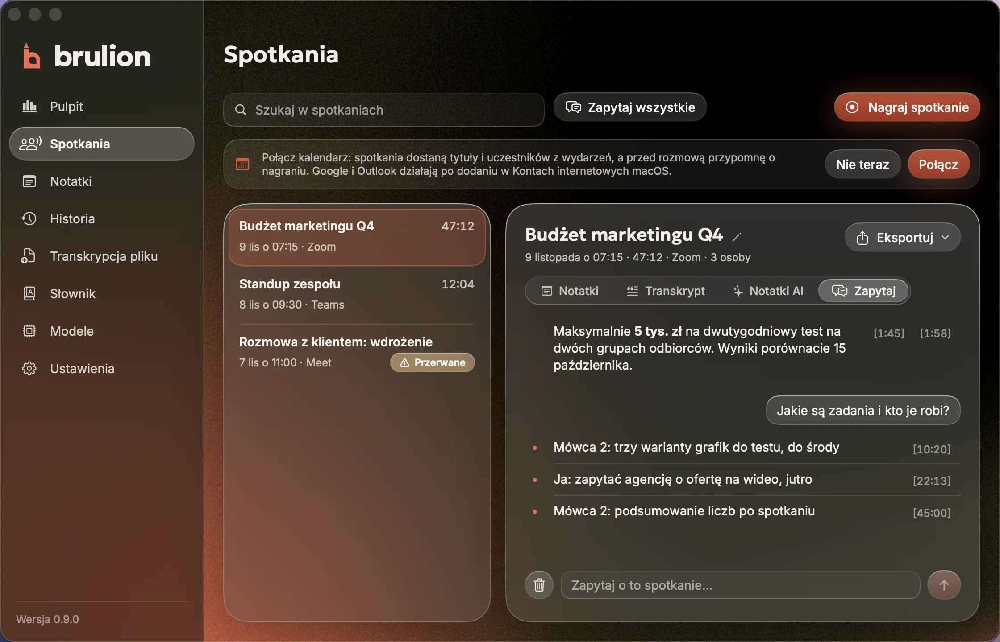
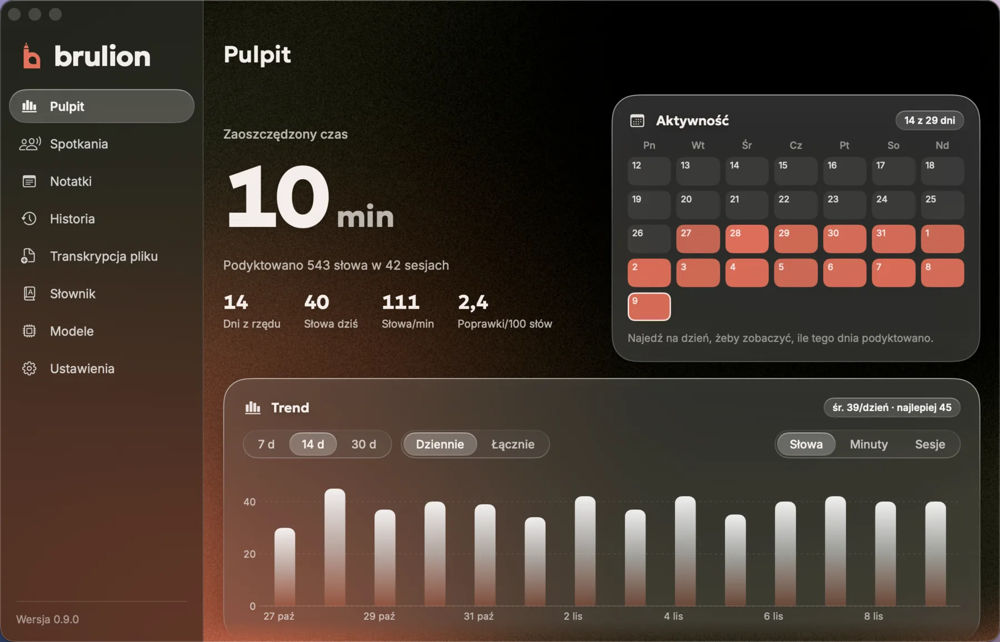

- ⌘ Prawy Command
- Whisper: mowa na tekst
- Bielik 1.5B: korekta
- Tekst przy kursorze
Dyktowanie w każdej aplikacji
Przytrzymaj klawisz i mów. Poprawiony tekst ląduje w mailu, czacie albo dokumencie, zwykle po 1,4 s korekty.
Dyktowanie i notatki ze spotkań na Macu. Przytrzymujesz klawisz, mówisz, a poprawiony tekst ląduje tam, gdzie piszesz. Działa na Bieliku, w całości na Twoim komputerze.
Za darmo i bez konta. Otwarty kod, GPLv3. macOS 14.4+, Apple Silicon.
Działa na
Na brudno, tak jak mówisz
Na czysto, przy kursorze
Brulion w skrócie
Przytrzymaj klawisz i mów. Poprawiony tekst ląduje w mailu, czacie albo dokumencie, zwykle po 1,4 s korekty.
Nagrywa mikrofon i dźwięk systemu, transkrybuje na żywo, a po rozmowie Bielik pisze notatki z cytatami do odsłuchania.
Mail, lista zadań, uporządkowane myśli albo angielski, zwykle w około 10 sekund. Możesz dodać własne polecenia.
Spotkania



Notatki AI
Po rozmowie Bielik pisze notatki: podsumowanie, decyzje, zadania i otwarte pytania. Każdy punkt ma znacznik czasu, który odtwarza ten moment.
Zapytaj
Zapytaj o jedno spotkanie albo o wszystkie naraz. Odpowiedź ma klikalne źródła, a gdy w rozmowach czegoś nie było, Brulion to mówi, zamiast zgadywać.
Pulpit
Zaoszczędzony czas, słowa i dni z rzędu. Każde dyktowanie zostaje w historii z nagraniem, wyszukiwarką i eksportem do CSV.
Zrzuty z aplikacji. Spotkania i liczby są zmyślone.
Jak to działa
Funkcje
Popraw słowo raz, a Brulion je zapamięta. Nazwiska, firmy i branżowe terminy dodasz do słownika.
Pisane, dyktowane i głosowe, w jednym miejscu. Tytuły podpowiada Bielik.
Upuść nagranie audio albo wideo, także głosówkę z WhatsAppa czy Telegrama.
Każde dyktowanie z nagraniem, wyszukiwarką i eksportem do CSV. Na Pulpicie zaoszczędzony czas i dni z rzędu.
Spotkania dostają tytuły i uczestników z wydarzeń, a przed rozmową Brulion przypomni o nagraniu. Tylko jeśli go włączysz.
Twój asystent AI może czytać spotkania przez lokalny serwer MCP. Tylko do odczytu, domyślnie wyłączony.
Pomiary
MacBook Pro M3 Pro z 36 GB RAM i 60 prawdziwych dyktowań autora, bez danych klientów. Punktem odniesienia jest chmurowe AI Captylo, z którego wyrósł Brulion.
1,37 s
Mediana korekty dyktowania do 60 słów, 2,49 s w 95% przypadków. Chmura Captylo AI: 0,80 s i 1,82 s, czyli jest szybsza.
Korekta, Bielik 1.5B1/7
60 z 60
Dyktowań z zachowanym sensem po korekcie. Bez strażnika słów Bielik 1.5B zmieniał sens w 8-15% dyktowań.
Strażnik słów2/7
0,89
Trafność interpunkcji (F1 wobec tekstu z chmury). Surowy Whisper bez korekty: 0,82.
Interpunkcja3/7
ok. 10 s
Mediana trybów AI: e-mail, lista zadań, uporządkuj myśli. 3 z 36 bez wyniku w limicie czasu, wtedy wkleja się surowy tekst.
Tryby AI, Minitron 7B4/7
2-3 min
Notatki z 30-44 minut rozmowy, liczone w tle. Godzina rozmowy: około 6 minut.
Notatki AI, Minitron 7B5/7
2,0 GB
Pamięć serwera modelu z Bielikiem 1.5B. Minitron 7B: 8,3-8,5 GB, razem z plikiem modelu zmapowanym w pamięci.
Pamięć6/7
0
Połączeń z internetem w trakcie pracy. Tylko 127.0.0.1, a testy przeszły też w klatce bez dostępu do sieci.
Sieć7/7
Pełna metoda i tabele: docs/benchmark.md.
Otwarty kod
Kod, prompty i pomiary są publiczne. Brulion stoi na otwartych projektach, którym dziękujemy, i wyrósł z Captylo 1.0.17.
Prywatność
Nagrania, transkrypty, odpowiedzi AI i notatki ze spotkań nigdzie nie wychodzą. Nie ma konta, abonamentu, telemetrii ani naszego serwera. W ustawieniach „Gdzie działa Bielik” wybierasz jedno z trzech:
0 złna zawsze
Korekta i funkcje AI na Bielikach pobranych na ten Mac. Działa bez internetu.
Pobierz na MacaCo dostajesz
Twój kluczu dostawcy
Korekta zostaje na Macu, a tryby AI, notatki i Zapytaj idą do Bielika 11B v3.0 w polskiej chmurze.
Jak to działaCo dostajesz
Twój kluczu dostawcy
Korekta i funkcje AI na Bieliku 11B. Rozpoznawanie mowy dalej działa na Macu.
Prywatność w READMECo dostajesz
Model 11B jest tylko opcją: liczby na tej stronie pochodzą z modeli lokalnych. Nauka z poprawek nie czyta pól haseł, menedżerów haseł ani terminali. Ta strona też nie śledzi: bez ciasteczek, analityki i zewnętrznych fontów.
Pobierz
Po pobraniu modeli dyktowanie i AI działają bez internetu. Brulion działa też obok Captylo, z osobnymi danymi i skrótami.
# Xcode 26 i Homebrew
brew install xcodegen cmake
git clone https://github.com/dawidkawalec/brulion.git
cd brulion
make llama # llama-server z przypiętego llama.cpp
make install # Brulion.app do ProgramówPytania
Nie ma tu Twojego pytania? Zajrzyj do README na GitHubie.
Nie. Brulion działa na Bieliku, otwartym modelu językowym Fundacji SpeakLeash, ale jest niezależnym projektem firmy CRAFTWEB. Nazwa i znak Bielika należą do SpeakLeash.
Nic. Nie ma abonamentu ani limitów, bo wszystko liczy Twój Mac. Jeśli włączysz Bielika w chmurze, płacisz bezpośrednio wybranemu dostawcy, według jego cennika.
Tak. Po pobraniu modeli dyktowanie, tryby AI, notatki ze spotkań i Zapytaj działają offline.
Potrzebujesz Maca z Apple Silicon (M1 lub nowszego) i macOS 14.4 lub nowszego. Na Macach z procesorem Intel Brulion nie działa. Pełna lokalna AI wymaga 16 GB RAM, na słabszych Macach działa tryb eksperymentalny.
Kod jest otwarty, a w pomiarach aplikacja i serwer modelu łączyły się tylko z 127.0.0.1. Te same zadania przeszły w klatce, która blokuje wszystkie połączenia z internetem.
Brulion sam niczego nie sprawdza w sieci, więc aktualizacji nie ma automatycznie. Nowa wersja to nowe wydanie na GitHubie.
Zaczynamy
Za darmo, bez konta, z otwartym kodem. Cała AI działa na Twoim Macu.
Skąd nazwa
Notujesz w nim szybko, bez przecinków i z „yyy”, a potem przepisujesz na czysto. Brulion robi to przepisywanie za Ciebie: mówisz tak, jak myślisz, a Bielik oddaje tekst gotowy do wysłania.
Znak to małe „b”. Laska jest ołówkiem, brzuszek dymkiem, z którego płynie mowa.